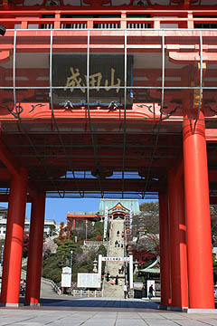

犬山成田山/愛知県犬山市
犬山成田山。
広大な境内には廃線が決定したモノレール駅や親方が逮捕されるという角界を揺るがすあの事件の現場があったりと何かと話題に事欠かない寺だったりする。
さすがに本山の成田山新勝寺には敵わないが、それでも愛知県屈指の名刹である事は言を待たない。
と思ったら、昭和28年の開創なんだそうで。

傾斜地にある境内は駐車場がある一番下の第一ステージ、山門のある第二ステージ、一番上で本堂のある第三ステージと3つのステージに分かれている。
駐車場から階段を上がり、明王門と呼ばれる山門を潜ると、やや平たい場所に出る。ここが第二ステージである。
階段の右手は第二ステージと第三ステージの間の傾斜地になっていて、仏像が点在しているようだ。
ん？
むむむっ！

あああ〜〜〜！
浅野先生の作品じゃないですか！
ドングリマナコにヘの字口、といった忍者ハットリ君のような特徴を持つコンクリ像は銘こそ見当たらないが紛れもなく浅野作品そのもの。
今まで何回か来た事のある寺だったが、その頃は浅野作品への鑑賞眼がなく、見落としていたのであった。
まさかこんな超メジャー級な寺に浅野作品が存在したとは驚きである。
斜面に点在する仏像群は五大明王と八大童子で昭和31年に製作されたもの。
コレまで地元のチビッコが遠足に行く程度のローカル寺院や個人の思い入れだけで営業しているようなテーマパーク、地元の人さえよく知らない霊場、観光用の怪しい城などにしか存在し得なかった浅野作品。
しかし、昭和31年。浅野祥雲65歳。
ついに正月三が日の参拝客が40万人を越えるクラスの大寺院にその技量を見込まれたのである！
いままでドサ廻りをしていた旅芸人に文化功労賞が与えられたかのような扱いではないか。
俺は今猛烈に感動している！
感動をありがとう、成田山。そして極楽でやっぱりコンクリ像を作っているであろう浅野祥雲師！

てな訳で階段を上り第三ステージの本堂へ。
この日は天気も良くお日柄も良いので大勢の七五三のチビッコが訪れていた。
もちろんチビッコ達は浅野作品の前をスルー。眼下のモノレールに目を奪われていた。
大勢の人でごった返す本堂の裏手にも確か茶色い群像のようなものがあったうような記憶が…
あったあ！
これまた浅野師の手による三十六童子。フィーチャリング不動明王。
これだけまとまった形で浅野作品が鑑賞できるところもそうそうないだろう。
いつまでも飽きることなくそのピースフルなコンクリ像を眺めていた。
浅野作品を見ていていつも不思議な感覚に陥るのはこの真っ直ぐな視線、なのではなかろうか？
真正面に立っても見ているこちらの目玉を通り抜けてさらに遠くを見つめているような視線。
その地平線の果てを見つめているかのような視線こそが浅野作品の本質があるのかもしれない。
あ、伊集院。

さて、ここまで読み進んでいただいて「何だよお、ただ茶色いコンクリ像ってだけで浅野作品だなんて抜かしやがって。飛ばしてんじゃねえよ。証拠がひとっつもないじゃんかよお。」と、お嘆きの貴兄もいらっしゃるかもしれない。
そんな輩はこの記念碑を見て平伏するのだっ！
ハイ。浅野マル確作品でございます。
三十六童子の先にはミニ大仏（日本語変か？）がある。
浅野祥雲師の出世作群を前にしたら最早、どうでもいいんですけど、大仏舎弟としては参拝しない訳にはまいるまい。
これにて参拝完了。
着飾って千歳飴をぶら下げたコドモ達以上にご機嫌な私。
傍から見たらさぞ危ないオジサンに見えたことだろうよ…小躍りしてたしね。俺。
平成20年末で営業を停止するモノレールの成田山駅。
レジャーと観光と信仰がゆる〜い一点で凝縮した不思議な場所、犬山。
そんな此岸と彼岸が混濁したような地に産み落とされた童子たちは今日も無言ではるか遠くを眺めているのであった。
考えてみたら犬山は浅野三大聖地である桃太郎神社のある所。
もしかしたら他にも浅野祥雲作品が人知れず眠っているかもしれない。
2008.11.
珍寺大道場 HOME